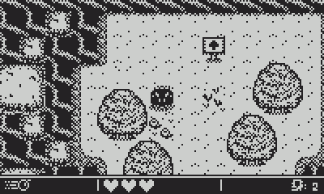
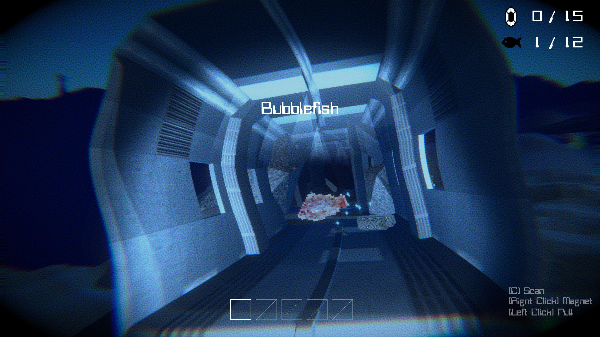
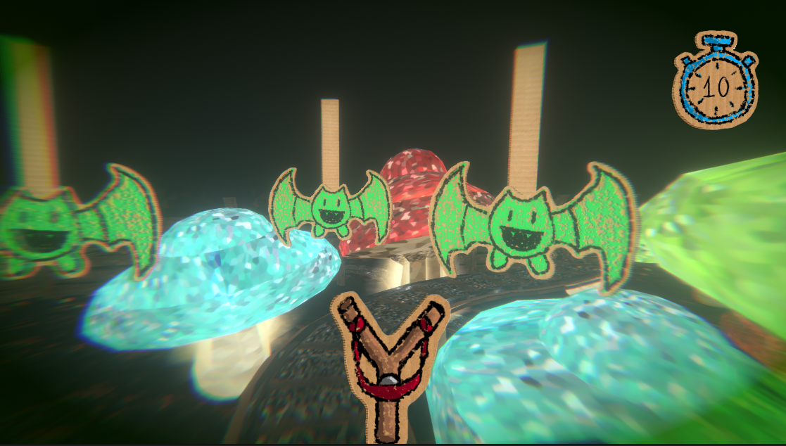
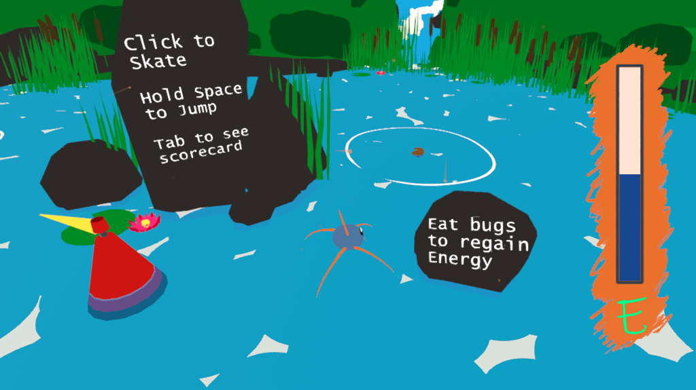
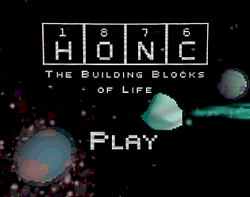
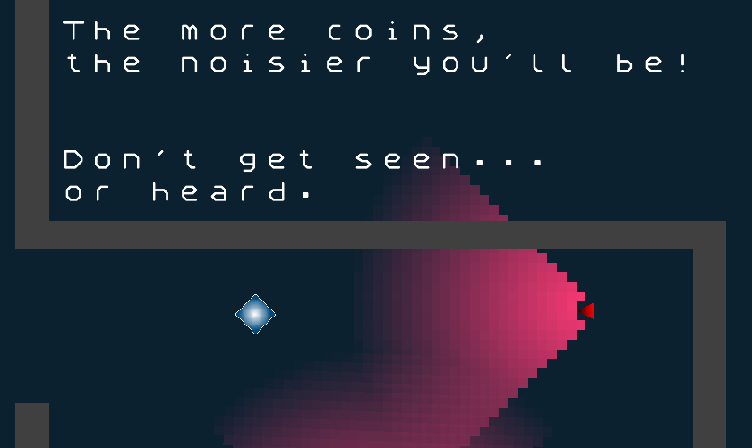
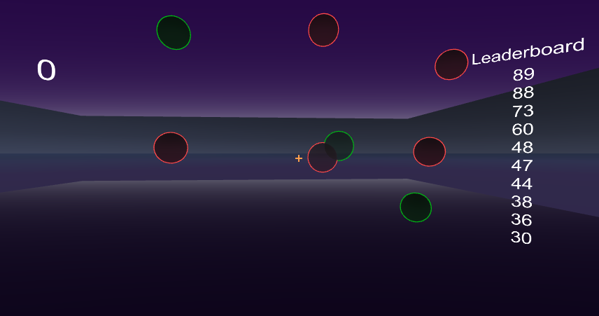
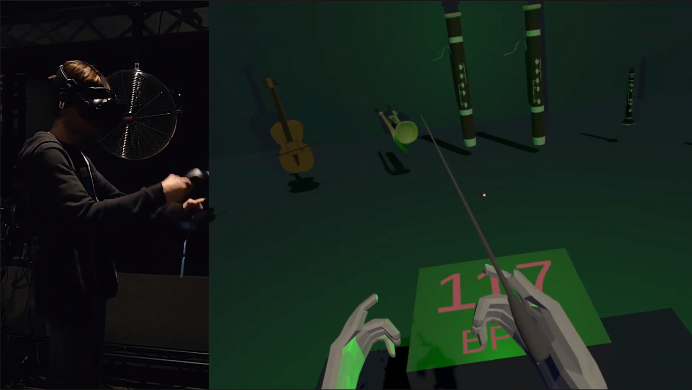
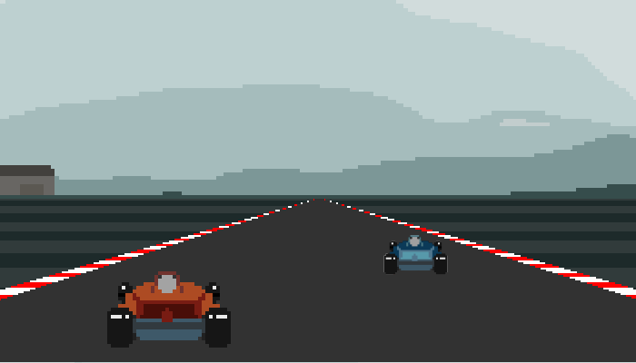
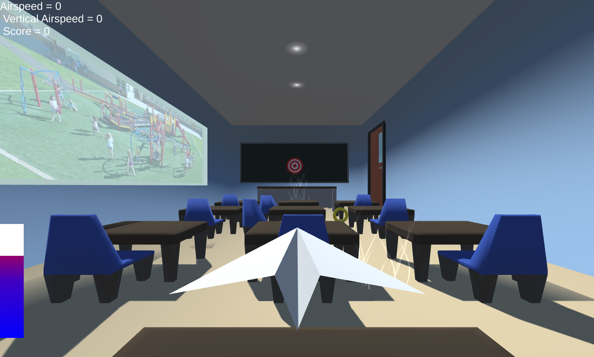

Game Development
Gamedev is my hobby, here's a few game/game-related projects I've worked on or are busy with at the moment! I primarily develop using Unity/C#.
Poly's Roly Rumble
I'm developing and designing a top-down tilt-controlled platformer for the Playdate with @RNGParty. Created in Lua.
Backspace Bouken

I did programming, writing, and design for Backspace Bouken, a typing-based first person dungeon crawler. Developed by @RNGParty, and released on Steam for Windows/Mac/Linux in 2019 and started life during Ludum Dare 42. Created in Unity.
F.R.I.E.N.D.
An underwater exploration game where you catalogue fish and upgrade your F.R.I.E.N.D. (Friendly Remote Investigative Environment Navigation Device) to explore deeper and deeper into the ocean. Created in Unity for Ludum Dare 48.
All A Board
Escape the mine on a runaway minecart in All A Board, an on-rails loop-based shooter made for Ludum Dare 47. Created in Unity.
The Pond is Bigger Than He Look
Dart across the water, eating bugs to gain energy and jump back to your home. "The Pond is Bigger Than He Look" is a physics-based game made for Ludum Dare 45. Created in Unity.
HONC
Pronounced "honk", HONC is a space exploration game for Ludum Dare 44 - life is currency. Created in Unity.
Furtive Fortune
A 2D stealth game that was developed solo in 72 hours for Ludum Dare 40. Created in Unity.
Bubble Take
A virtual reality arcade game using only head-tracking controls, developed in 36 hours for Boilermake 2018. Created in Unity.
Tetris99 AI
An IoT hack created for CSCI 48700 (Artifical Intelligence). Built off of the hardware tech from PCtoSwitch, this bot plays Tetris 99 live on a real Nintendo Switch. Coded in C/Arduino.
PCtoSwitch
An IoT hack designed to send any input over USB from a PC to a Nintendo Switch. Developed at Hackillinois 2019. Coded in C/Arduino.
ConductVR
A virtual reality conductor simulation made for my undergraduate capstone project. Instruments play to the beat and volume conducted by the user.
Mode Zero Racing
A multiplayer 2D racing game made for CSCI 43700 (2D Game Development). Created with Python/Pygame.
Soaring Stationary
A 3D flight simulator made for CSCI 43800 (3D Game Development). Created in Unity.
VGC
I'm a Pokémon VGC player who develops a lot of well-known tools for the community.
Damage Calculator
I develop and run the main damage calculator used in the VGC community. It was unofficially forked from the Nuggetbridge calculator (RIP) which I also helped maintain. It has since moved to Trainer Tower where it currently lives.
I have also ported the damage calculator to Android and iOS, in the form of a Cordova application. It is currently available for Android on the Google Play Store.
Showdown Usage
Thanks to Antar, I have been able to collect and display relevant stats from Pokémon Showdown's VGC ladder. Currently hosted on Trainer Tower.
Battlespot Usage
In a similar vein to the Showdown Usage, I've scraped stats from the official on-cartridge database that is hosted on Pokémon Global Link (Credit to Ferretsroq for detailing the process). Currently hosted on Trainer Tower.
Other
Here's some random side projects I've made.
Web-CAP
A retooling of the CAP cryptography tool for web using React. Built for CSCI 43200 (Security).
PyCaster
Dynamic raycasting engine made for CSCI 23000 final project. Reads in level data from images, displays pseudo-3d terrain with a simple turn-based combat system.
JRay
PyCaster continuation, this time in Java made for CSCI 24000 final project. Includes "full" 3D elements, variable heights, player Z-axis movement, colors, realtime hitscan + projectile combat, etc.